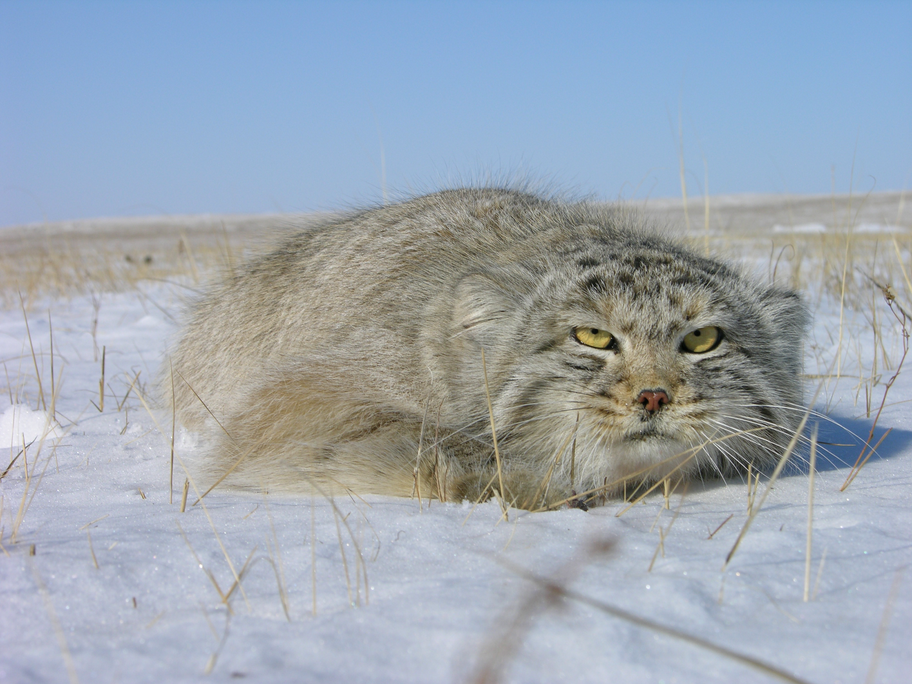

My page
Pallas cats are awesome!
Meet one of the fluffiest and most unusual wild cats in the world.
Pallas cats may look grumpy, but they’re perfectly adapted to life in the cold mountains of Central Asia.

Meet the Pallas Cat

Their thick fur helps them survive freezing mountain climates.
Their thick fur helps them survive freezing mountain climates.
Their thick fur helps them survive freezing mountain climates.
Their thick fur helps them survive freezing mountain climates.
Pallas cats may look permanently annoyed, but that is part of their charm. Quiet, fluffy,
and perfectly adapted to harsh mountain landscapes, they are one of the strangest little wild cats on Earth.
–a Pallas cat